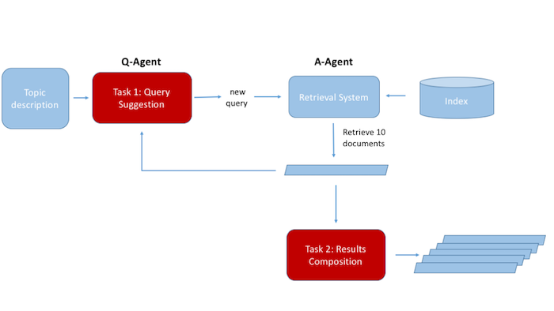

Information Retrieval (IR) research has traditionally focused on serving the best results for a single query — so-called ad hoc retrieval. However, users typically search iteratively, refining and reformulating their queries during a session. A key challenge in the study of this interaction is the creation of suitable evaluation resources to assess the effectiveness of retrieval systems over sessions. The TREC Interactive, Session and Tasks tracks attempted to approach this problem, without managing to produce a reusable test collection to evaluate the entire sessions of a conversation between a user and a machine. The problem remains open.
It has become urgent for the community, and especially forums such as TREC, CLEF, NTCIR to put a focus on and provide such a setup that will put IR at the frontline in developing dynamic systems that better fit the IR needs. The Dynamic Search Lab attempts to construct such reusable test collections and metrics that will allow the development of dynamic search algorithms. The objective of the lab is threefold:
We view the problem of dynamic search as the development of two agents, a question agent and an answer agent. The two agents interact with each other towards fulfilling a user's information need.
The tasks of the Lab can be viewed in the figure below: the development of a Q-agent that produces queries to be submitted to a given retrieval system, and the development of a system that composes the results of the multiple rounds of interactions between the two agents into a single ranking.
The collection that will be used in the 2018 Lab will be the New York Times corpus (https://catalog.ldc.upenn.edu/ldc2008t19). The New York Times dataset consists of articles published in New York Times from January 1, 1987 to June 19, 2007 with metadata provided by the New York Times Newsroom, the New York Times Indexing Service and the online production staff at nytimes.com. Most articles are manually summarized and tagged by professional staffs. The original form of this dataset is in News Industry Text Format (NITF). This dataset can aid the research in Document Categorization, Information Retrieval, Entity Extraction and etc. The corpus has been indexed by Indri and a Query Language Model with Dirichlet Smoothing has been implemented on the top of the Indri index. Participants will be provided with a RESTful API to query the index (https://bitbucket.org/cvangysel/pyndri-flask)
The topics have been developed by the NIST assessors. A topic (which is like a query) contains a few words. It is the main search target for one complete run of dynamic search. Each topic contains multiple subtopics, each of which addresses one aspect of the topic. The NIST assessors have tried (very hard to) produce a complete set of subtopics for each topic, and so we will treat them as the complete set and use them in the interactions and evaluation
The overall schedule for the labs and the CEUR-WS Lab Working Notes is as follows:
The schedule for the conference and for LNCS Publication: